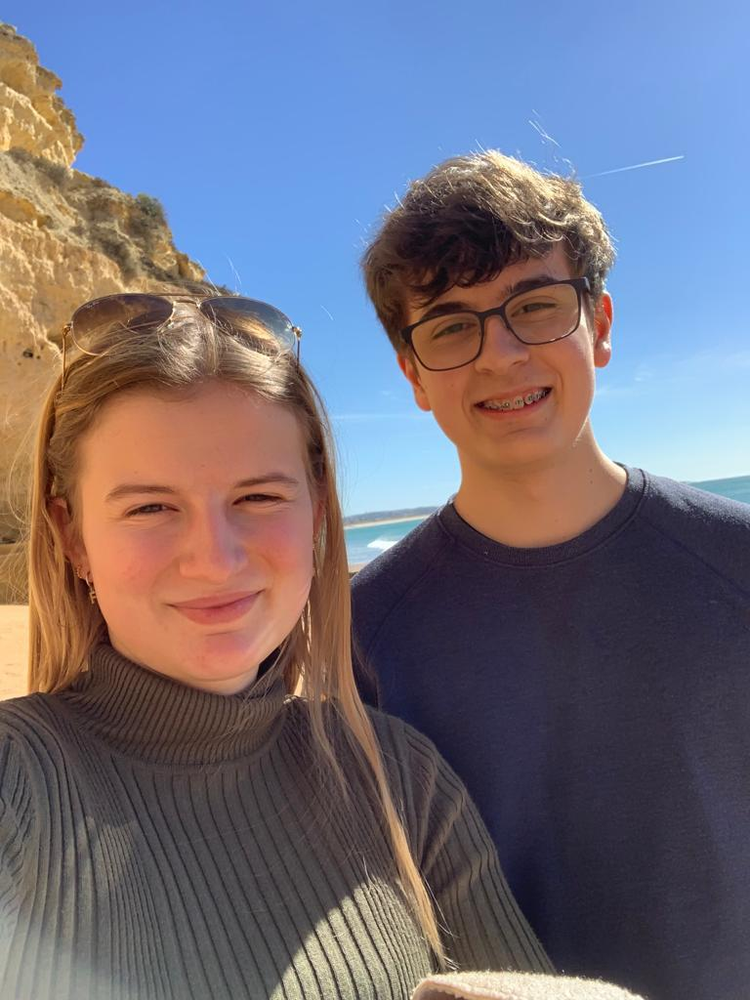

Steckbrief über Fynn Häny
- Name: Häny
- Vorname: Fynn
- Geburtsdatum: 01.06.2005
- Wohnort: Ettingen
- Geschwister: Fiona
- Haustiere: -
- Hobbies: Tauchen, mit Freunden treffen, Gaming
Thorsten Butsch ist eine von mir erfundene Person. In meiner Freizeit spiele ich gerne Videospiele. Vor allem mag ich das Spiel "GTA RP". "RP" steht darin für Roleplay. In diesem Spiel lebt man ein zweites Leben und kann alles mögliche machen. Man kann zu Polizei gehen, Mediziner werden und so weiter. Das Spiel macht deshalb so viel Spass, weil es jeden Tag etwas anderes ist. OOC bedeutet ausgeschrieben Out of Character